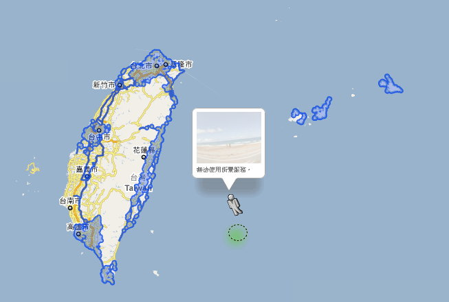

🏠 首頁
📁 網友哈啦區
Google 台灣街景又更新囉！
👤 aoifh
🕐 2010-01-21 09:11:09
原本只有台北地區有街景，現在台中高雄等地區都有了
重要道路也有開放～像是梅花1/3/5 台九線也有
以下藍色的部分就是有街景的縣市：

附件: google_st.jpg
趕快去玩玩吧[:baozi6:]
可以看到誰家呢？
👤 binyi
🕐 2010-01-21 09:43:33
Oh my fur! 連我家那條有點小的街也入景
從網路上逛著熟悉的道路很微妙, 或許找部分店家更方便
不曉得能挖到什麼有趣的畫面, 當作是寒假的網路之旅 [:baozi6:]